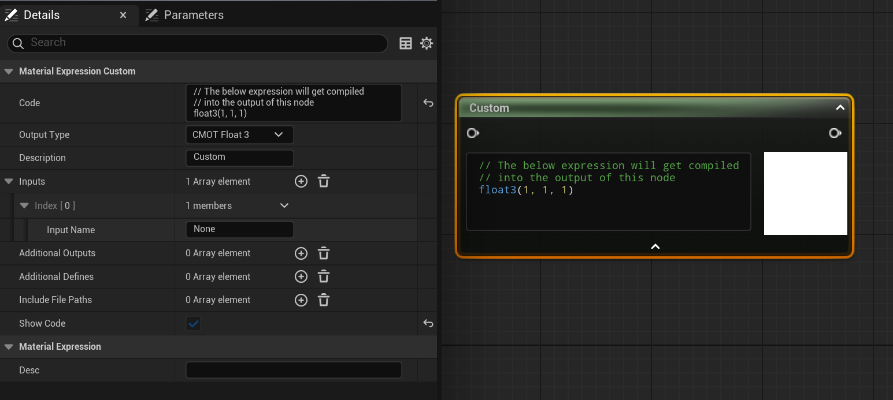
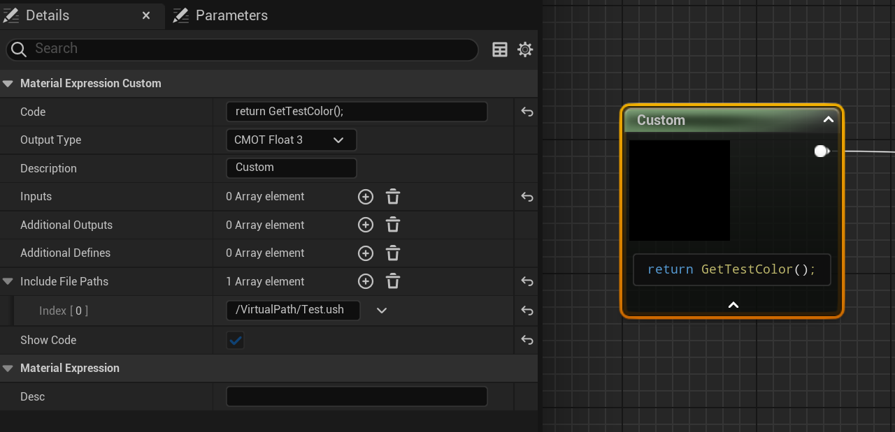
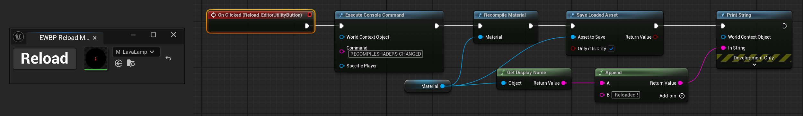

Author: Nelson Defoulny
Category: Tutorials
Unreal Engine Version: 5.5
UE HLSL in Materials
Custom Node
The easiest method to add HLSL in Unreal Engine Materials is to write our code directly in the Custom Node.

Despite being simple it has several noticeable features.
- HLSL can be written directly in the node.
- Return type can be selected from float1 up to float4 and can also be a material attributes.
- It accept any number of named inputs. Input types are unspecified so its important to match HLSL with provided parameters.
- It provides a list of named and typed additional outputs. They can be assigned directly in HLSL.
- You can provide additional define with name and value. For example a define named MAGENTA with a value of float3(1, 0, 1) is equivalent to HLSL #define MAGENTA float3(1, 0, 1).
- It can import shader files. This is mostly used to import Unreal Shader Headers.
While custom node allow for a quick start with hlsl, it quickly becomes constraining as the code becomes more complex. Writing the code in the material is impractical, does not truly support struct and functions (despite some workaround exists), and does not allow proper version control. Fortunately there is a simple solution, adding our own hlsl shader files into Unreal Engine.
These file comes in two difference format, ush (Unreal Shader Headers) are used to create libraries, while usf (Unreal Shader Format) contains shader entry points.
Here we are only looking at ush files which are safe to import from material custom nodes.
If you want to add your own shader to Unreal Engine you will need usf files but this is a more complex topic that would requires its own post.
Adding Shader Files
From Project
In order to include our own shader files we need a C++ module. Even if you are not familiar with C++ we only need few lines of code so you should be able to follow up.
If your project does not have C++ yet, in main window go to Tools -> New C++ Class. You can chose whatever class you need or just use Empty. Generate and open the solution with your favorite IDE.
Open {ProjectName}.h file. It should contain a module declaration similar to the following one. (Replace '' with your project name).
#pragma once
#include "CoreMinimal.h"
#include "Modules/ModuleManager.h"
class FProjectNameModule : public IModuleInterface
{
public:
virtual void StartupModule() override;
virtual void ShutdownModule() override;
};
Open {ProjectName}.cpp file. It should contain StartupModule and ShutdownModule definitions as well as module declaration. We are only interested in StartupModule method in which we will declare our shader file virtual path.
void FRayMarchModule::StartupModule()
{
FString ShaderDir = FPaths::Combine(FPaths::ProjectDir(), "FolderName");
if(FPaths::DirectoryExists(ShaderDir))
{
AddShaderSourceDirectoryMapping(TEXT("/VirtualPath"), ShaderDir);
}
}
Your shader files should be in ProjectDir/FolderName/. You can change the location if needed.
The FolderName is where you plan to store your shader files and I recommend sticking to Shaders as it is the Unreal Engine nomenclature.
The first parameter of AddShaderSourceDirectoryMapping is your virtual shader path name and is important for following steps so you should choose something meaningful for you.
From a Plugin
As an alternative you can also add shader file from a plugin. In this case you can build the path using the plugin manager.
void FRayMarchModule::StartupModule()
{
FString PluginShaderDir = FPaths::Combine(
IPluginManager::Get().FindPlugin(TEXT("PluginName"))->GetBaseDir(), TEXT("FolderName")
);
AddShaderSourceDirectoryMapping(TEXT("/VirtualPath"), PluginShaderDir);
}
Your shader files should be in PluginDir/FolderName/. You can change the location if needed.
Important
Plugin loading phase should be set to PostConfigInit. See .uplugin file.
Using Shader Files
Now that our virtual path is declared we can start using hlsl code from shader files.
In order to test that let's create an unreal shader header file into FolderName/Test.ush and create a test function.
#pragma once
#include "/Engine/Public/Platform.ush"
float3 GetTestColor()
{
return float3(1, 0, 1); // Magenta
}
Important
All shader files has to include /Engine/Public/Platform.ush directly or indirectly. This ensure Unreal Engine compile your shader for all platforms.
In a material let's add a Custom node and add /VirtualPath/Test.ush to its Include File Paths.

Of course you can also import your shader files in one another or import Unreal Engine Shader files. I especially recommend to check the content of /Engine/Private/Common.ush which contains a lot of useful stuff.
Development
Development Mode
I recommend setting r.ShaderDevelopmentMode console command to 1 which enable detailed logs on shader compiles and the opportunity to retry on errors.
During development i highly recommend adding it by default in Config/ConsoleVariables.ini so it is automatically enabled on project start up.
Shader Recompile
Unreal Engine Editor automatically recompile modified ush file. However you might need to trigger it manually.
By default the shortcut is Ctrl + Shift + . but you can change it by searching Recompile Changed Shaders in Editor Preferences.
You can also recompile shaders from command line using RECOMPILESHADERS CHANGED.
Material Recompile
Unfortunately even if ush file recompiled it won't update materials that use it through custom node. According to the documentation, the solution is to make a dummy change in the material and use Save or Apply button of the toolbar to trigger its recompile.
Tip
I prefer working directly on the scene so I recompile through an Editor Utility Widget using a Button and a Material Single Property View.

Rider
If you are using Rider you can associate usf/ush using Rider Associate File Type (might need to restart Rider).